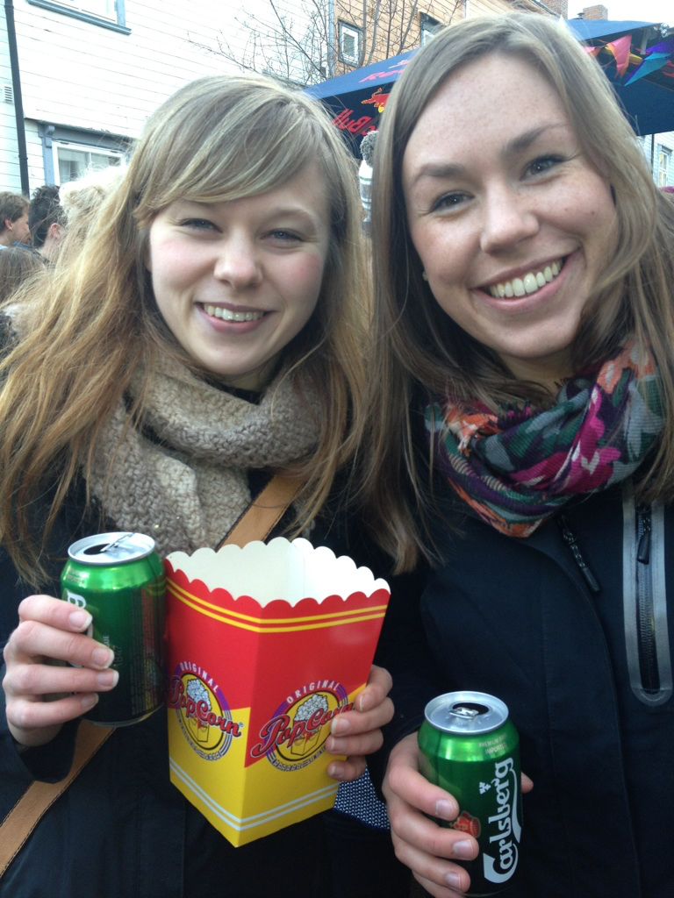
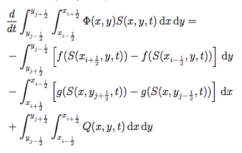
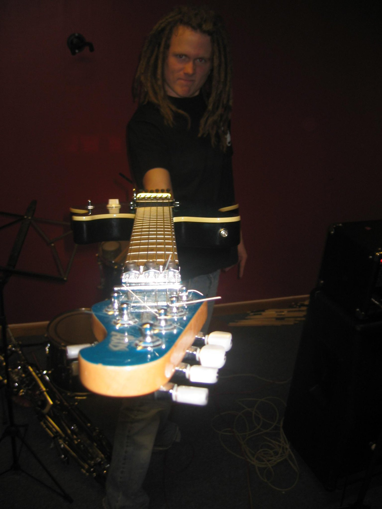
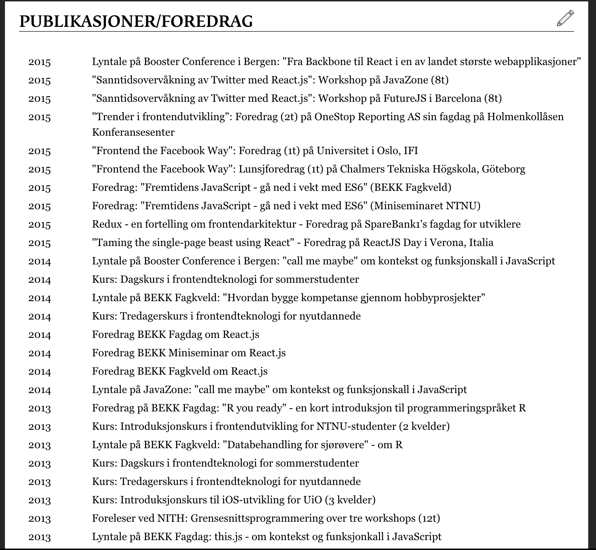
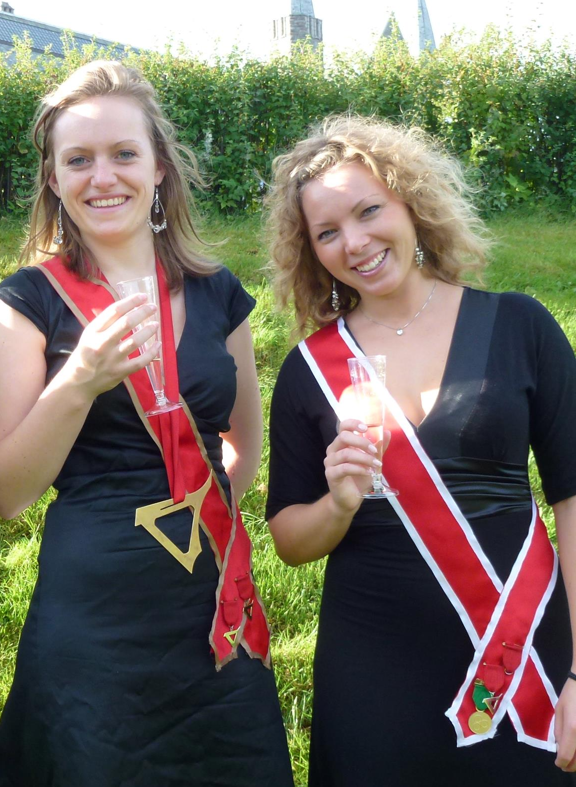

Møt…
Jøran
Møt…
Guro

NTNU 2015
Industriell matematikk
Simulations of CO2 Migration
with a Fully-Integrated VE Model on the GPU

with a Fully-Integrated VE Model on the GPU
Bekkuro
- 2014
- Sommerjobb på NAV
- Mars 2015
- Oppstart på Digipost
- 2016
- Ansvarlig for frontend på Digipost
Få ansvar tidlig!
Møt…
Mats

NTNU 2010
Kommunikasjonsteknologi
Java Implementation and Performance Analysis of 14 SHA-3 Hash Functions on a Constrained Device
Bats
- 2011
- Virksomhet 2.0
- 2012
- Leter etter seg selv
- 2013
- Finner seg selv
- 2014
- Spirer
- 2015
- Blomstrer
Mange muligheter
Placeholder for CY
Møt…
Erik

NTNU 2012
Kommunikasjonsteknologi
Cheating in Online Games - Bots and Bot-Detection in Browser-Based Multiplayer Games
Bekkrik
Jobb med de beste folka
Møt…
Ingvild

NTNU 2014
Fysmat
A Hybrid Metaheuristic for the Mixed Capacitated General Routing Problem with Route Balancing
Bekkvild
- 2014
- NAV
- 2015
- Statens Vegvesen
- 2016
- Oppstartsansvarlig i Tech
The Right Size
Møt…
Olav

NTNU 1982
Bygg
Fra transcendental til grammatisk undersøkelse av estetisk erfaring - I lys av Kant og
Wittgenstein
Bekklav
- 1982
- Bygg
- 1982-2001
- ??
- 2001
- CEO i Bekk Consulting AS
- 2016
- Profit!
Hva er liksom greia med Bekk?
- Få ansvar tidlig, utvikle deg fort
- Mange muligheter
- Jobb med de beste folka
- Riktig størrelse